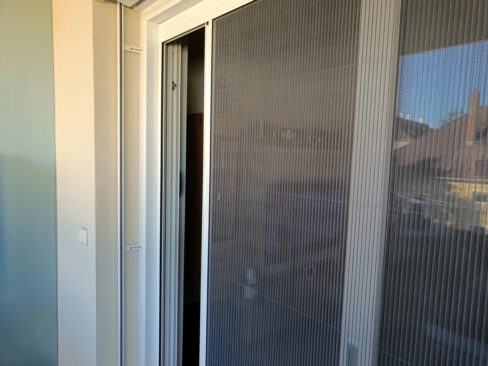
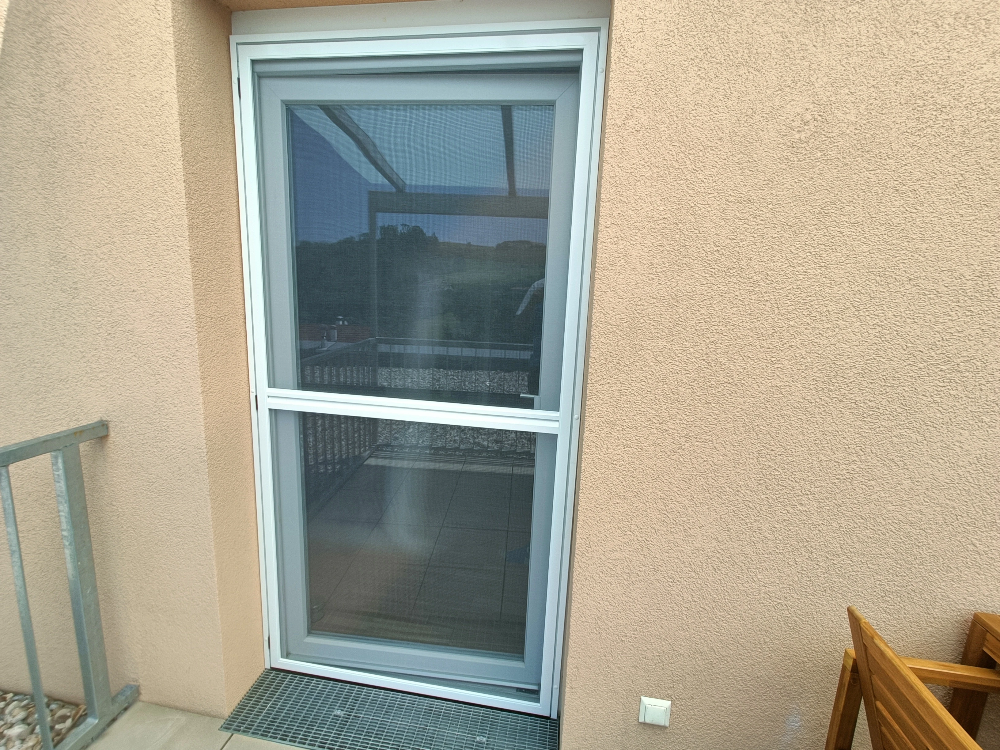

Szúnyoghálók

Szúnyogháló-pliszé
Modern, harmonikaszerűen nyitható-zárható szerkezet, ideális nagyobb nyílásokhoz, teraszajtókhoz is. Könnyen kezelhető, tartós, esztétikus, kis helyen elfér.
- Nagy nyílásokhoz, tolóajtókhoz is ideális
- Könnyen kezelhető, kis helyigény
- Tartós, esztétikus kivitel


Szúnyogháló-keret
Klasszikus, fix vagy nyitható keretes megoldás ablakokra, ajtókra. Strapabíró alumínium vagy műanyag keret, UV-álló háló, egyszerű felszerelés.
- Fix vagy nyitható kivitel
- Strapabíró, UV-álló háló
- Egyszerű felszerelés, hosszú élettartam

Szúnyoghálós rolók
Fel- vagy oldalra húzható, helytakarékos, praktikus megoldás ablakokra, erkélyajtókra. Rugós vagy láncos működtetés, halk és megbízható mechanika.
- Fel- vagy oldalra húzható kivitel
- Helytakarékos, szinte láthatatlan használaton kívül
- Halk, megbízható működés